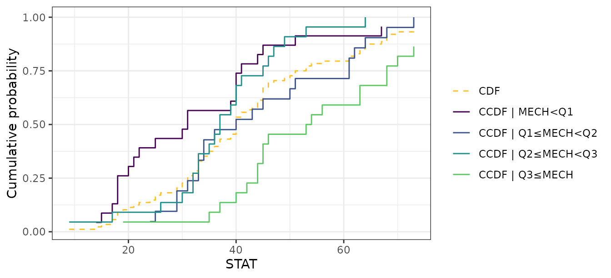
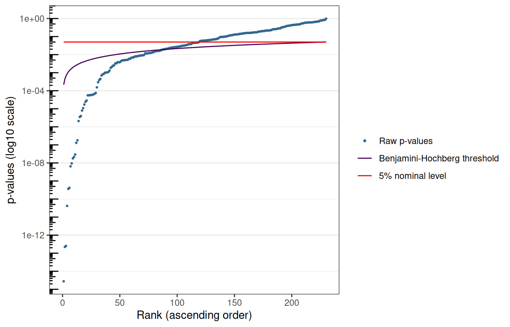
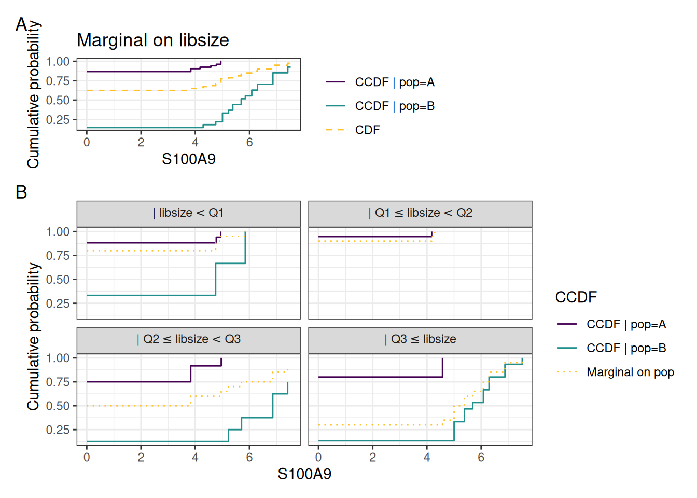

1 Overview of citcdf
citcdf performs conditional independence testing through conditional cumulative distribution functions (Gauthier et al. 2021). It addresses the following null hypothesis: H_0: Y \perp\!\!\!\perp X \mid Z
by testing whether F_{Y \mid X, Z}(y) = F_{Y \mid Z}(y). The associated test statistic is computed across a grid of thresholds \omega_1 < \dots < \omega_p spanning Y, where the indicator \mathbb{1}_{Y_i \le \omega_j} is regressed on both X and Z at each threshold j. Under H_0, the coefficients \beta_j carried by X are all null, and thus citcdf test statistic is the sum of squares whose asymptotic distribution is then a weighted mixture of \chi^2_1 (whose weights are the eigenvalues of the covariance of the \beta_j).
No distributional assumption is made on Y, and in that sense citcdf is distribution-free. It is therefore robust to zero-inflation, multi-modality and skewness that typical occur in single-cell RNA-seq data.
1.1 Main user functions
Three main functions build form the citcdfpackage leverage this test statistic:
-
cit_asymp(): one hypothesis, asymptotic p-value -
cit_perm(): one hypothesis, permutation p-value -
cit_multi(): many outcomes at once (with a Benjamini-Hochberg adjustment), either asymptotic or permutation test
1.2 Inputs
Y is a numeric vector. X and Z are data frames, one column per variable, numeric or factor. Gene set analysis is available through cit_gsa() and is not covered here.
2 Testing a single hypothesis
2.1 The data
We use the marksdataset, from the bnlearn package (Scutari 2010). It records the exam marks of 88 students in five mathematics topics (Mardia et al. 1979). Of note, mechanics and statistics marks are correlated, but the association is mediated by the algebra mark (relevant to both disciplines).
data("marks", package = "bnlearn")
str(marks)
#> 'data.frame': 88 obs. of 5 variables:
#> $ MECH: num 77 63 75 55 63 53 51 59 62 64 ...
#> $ VECT: num 82 78 73 72 63 61 67 70 60 72 ...
#> $ ALG : num 67 80 71 63 65 72 65 68 58 60 ...
#> $ ANL : num 67 70 66 70 70 64 65 62 62 62 ...
#> $ STAT: num 81 81 81 68 63 73 68 56 70 45 ...
2.2 Asymptotic test with cit_asymp()
Y is the statistics mark, X the mechanics mark. Without conditioning:
Y <- marks$STAT
X <- data.frame(MECH = marks$MECH)
cit_asymp(Y, X)
#> raw_pval test_statistic
#> 1 7.123049e-05 0.1797552Conditioning on the algebra mark asks whether mechanics adds anything beyond algebra:
Z <- data.frame(ALG = marks$ALG)
cit_asymp(Y, X, Z)
#> raw_pval test_statistic
#> 1 0.5566318 0.01850231The evidence disappears.
NB: cit_asymp() assumed neither normality nor linearity.
It remains valid for skewed, zero-inflated or multi-modal outcomes.
Of note, bnlearn::ci.test() reaches the same conclusion from a Gaussian correlation statistic:
2.3 Permutation test with cit_perm()
The asymptotic null distribution requires a reasonable sample size. For small n (below 30) and at most one covariate, cit_perm() calibrates the same observed statistic against a permutation null:
cit_perm(Y, X, n_perm = 1000)
#> score raw_pval test_statistic
#> 1 0 0.000999001 0.1797552test_statistic remains identical to the one returned by cit_asymp(), and score counts the permutations reaching the observed statistic: the (unbiased) permutation p-value is then computed as (score + 1) / (n_perm + 1) (so n_perm also fixes the smallest reachable p-value, ie. 1/(n_perm +1).
Permuting X freely would destroy its association with Z and test the wrong null. X_perm() computes design permutations conditionally on Z:
- Z discrete: permutes within each strata of Z
-
Z continuous: permutes by matching observations on the fitted value of X given Z, following Berrett et al. (2020) (see
?perm_cont)
cit_perm(Y, X, Z = Z, n_perm = 1000)
#> score raw_pval test_statistic
#> 1 523 0.5234765 0.01850231Both tests agree on both hypotheses.
NB: cit_perm() only accepts a single covariate column when Z is not NULL. Multiple X with Z present require the asymptotic test.
2.4 Visualization
plot_compare_ccdf() displays what the statistic compares: the CCDF of Y given X against its marginal counterpart. The further apart the 2 are, the larger D:
plot_compare_ccdf(Y = data.frame(STAT = Y), X = X)
3 Testing many outcomes with cit_multi()
cit_multi() loops the test over the columns of a matrix M of n observations by r outcomes, and returns Benjamini-Hochberg adjusted p-values (alongside the raw ones).
3.1 scRNA-seq data
This vignette uses pbmc_small, the PBMC scRNA-seq excerpt distributed with the SeuratObject package (Satija et al. 2023) (230 genes, 80 cells).
NB: M must be oriented cells-by-genes, the transpose of usual genes-by-cells expression matrix. Also, outcomes with no variability must be filtered-out beforehand (otherwise an error is triggered).
The variable of interest is the cell population (letter.idents, two populations). The two populations were not sequenced to comparable depth:
tapply(cell_md$nCount_RNA, cell_md$letter.idents, median)
#> A B
#> 150 353Library size is therefore a candidate confounder. An unadjusted comparison will identify significant genes that are only associated with sequencing depth.
3.2 Asymptotic analysis
X_pop <- data.frame(pop = cell_md$letter.idents)
Z_lib <- data.frame(libsize = cell_md$nCount_RNA)
res_unadj <- cit_multi(M, X = X_pop, test = "asymptotic", parallel = FALSE)
res_adj <- cit_multi(M, X = X_pop, Z = Z_lib, test = "asymptotic",
parallel = FALSE)
c(unadjusted = sum(res_unadj$pvals$adj_pval < 0.05),
adjusted = sum(res_adj$pvals$adj_pval < 0.05))
#> unadjusted adjusted
#> 134 87Conditioning on library size withdraws a third of the hits. The strongest signals — canonical monocyte markers — survive:
head(res_adj$pvals[order(res_adj$pvals$raw_pval), ], 5)
#> raw_pval adj_pval test_statistic
#> S100A9 2.774752e-15 6.381929e-13 250.5153
#> TYMP 2.228322e-13 1.934174e-11 256.8253
#> S100A8 2.522836e-13 1.934174e-11 246.5594
#> AIF1 4.167981e-11 2.396589e-09 205.6298
#> CST3 3.651514e-10 1.599055e-08 180.3064res_adj is a list containing:
-
which_testandn_perm, the test performed and the number of permutations (NAfor the asymptotic test) -
pvals, the gene-wise raw and BH-adjusted p-values, plus the test statistics
The plot() method sorts the raw p-values against the BH threshold and the nominal level:
plot(res_adj)
3.3 Visualization
plot_compare_ccdf() details one gene. Panel A contrasts the CCDF given the cell population with the marginal CDF. Panel B repeats the comparison within library-size quartiles.
top_gene <- rownames(res_adj$pvals)[which.min(res_adj$pvals$raw_pval)]
plot_compare_ccdf(Y = M[, top_gene, drop = FALSE], X = X_pop, Z = Z_lib,
space_y = TRUE, number_y = 20)
3.4 Permutation analysis
With 80 cells, the asymptotic approximation should work (low end of its range). test = "permutation" confirms a few genes. adaptive = TRUE (the default) spends additional computation time to increase p-value resolution where it matters (especially for FDR-adjusted p-values): all outcomes start at n_perm, and only those still significant proceed to the larger stages of n_perm_adaptive.
res_perm <- cit_multi(M, X = X_pop, Z = Z_lib, test = "permutation",
n_perm = 100, parallel = FALSE)
#> Computing 100 permutations...
#> Computing 100 additional permutations...
#> Computing 300 additional permutations...
#> Computing 500 additional permutations...
res_perm$n_perm
#> [1] 100 200 500 1000
order_asymp <- rownames(res_adj$pvals[order(res_adj$pvals$adj_pval),])
reactable::reactable(data.frame(asymptotic = signif(res_adj$pvals[order_asymp, "raw_pval"], 3),
permutation = signif(res_perm$pvals[order_asymp, "raw_pval"], 3),
row.names = order_asymp),
defaultPageSize=15
)The orderings largely agree, while individual p-values differ (as expected: the permutation ones carry Monte Carlo noise and cannot fall below \frac{1}{n_{\text{total permutations}} + 1}).
4 Practical considerations
5 Session information
─ Session info ───────────────────────────────────────────────────────────────
setting value
version R version 4.6.1 (2026-06-24)
os Ubuntu 24.04.5 LTS
system x86_64, linux-gnu
ui X11
language en-US
collate C.UTF-8
ctype C.UTF-8
tz UTC
date 2026-10-09
pandoc 3.8.3 @ /opt/hostedtoolcache/pandoc/3.8.3/x64/ (via rmarkdown)
quarto 1.10.19 @ /usr/local/bin/quarto
─ Packages ───────────────────────────────────────────────────────────────────
package * version date (UTC) lib source
bnlearn 5.2.1 2026-07-17 [1] RSPM
citcdf * 1.2.1 2026-10-09 [1] local
cli 3.6.6 2026-04-09 [1] RSPM
codetools 0.2-20 2024-03-31 [3] CRAN (R 4.6.1)
DBI 1.3.0 2026-02-25 [1] RSPM
digest 0.6.39 2025-11-19 [1] RSPM
dotCall64 1.2 2024-10-04 [1] RSPM
dplyr 1.2.1 2026-04-03 [1] RSPM
evaluate 1.0.5 2025-08-27 [1] RSPM
farver 2.1.2 2024-05-13 [1] RSPM
fastmap 1.2.0 2024-05-15 [1] RSPM
future 1.76.0 2026-09-24 [1] RSPM
future.apply 1.20.2 2026-02-20 [1] RSPM
generics 0.1.4 2025-05-09 [1] RSPM
ggplot2 4.0.3 2026-04-22 [1] RSPM
globals 0.19.1 2026-03-13 [1] RSPM
glue 1.8.1 2026-04-17 [1] RSPM
gtable 0.3.6 2024-10-25 [1] RSPM
htmltools 0.5.9 2025-12-04 [1] RSPM
htmlwidgets 1.6.4 2023-12-06 [1] RSPM
jsonlite 2.0.0 2025-03-27 [1] RSPM
knitr 1.52 2026-09-06 [1] RSPM
labeling 0.4.3 2023-08-29 [1] RSPM
lattice 0.22-9 2026-02-09 [3] CRAN (R 4.6.1)
lifecycle 1.0.5 2026-01-08 [1] RSPM
listenv 1.1.0 2026-10-04 [1] RSPM
magrittr 2.0.5 2026-04-04 [1] RSPM
Matrix 1.7-5 2026-03-21 [3] CRAN (R 4.6.1)
mitools 2.7 2026-08-31 [1] RSPM
otel 0.2.0 2025-08-29 [1] RSPM
parallelly 1.48.0 2026-06-29 [1] RSPM
patchwork 1.3.2 2025-08-25 [1] RSPM
pbapply 1.7-5 2026-09-01 [1] RSPM
pillar 1.11.1 2025-09-17 [1] RSPM
pkgconfig 2.0.3 2019-09-22 [1] RSPM
progressr 1.0.0 2026-07-04 [1] RSPM
R6 2.6.1 2025-02-15 [1] RSPM
RColorBrewer 1.1-3 2022-04-03 [1] RSPM
Rcpp 1.1.2 2026-07-05 [1] RSPM
reactable 0.4.5 2025-12-01 [1] RSPM
reactR 0.6.1 2024-09-14 [1] RSPM
rlang 1.3.0 2026-07-05 [1] RSPM
rmarkdown 2.32 2026-09-01 [1] RSPM
S7 0.2.2 2026-04-22 [1] RSPM
scales 1.4.0 2025-04-24 [1] RSPM
sessioninfo 1.2.4 2026-06-04 [1] RSPM
SeuratObject 5.4.0 2026-04-11 [1] RSPM
sp 2.2-3 2026-07-19 [1] RSPM
spam 2.11-4 2026-05-29 [1] RSPM
survey 4.5 2026-02-24 [1] RSPM
survival 3.8-6 2026-01-16 [3] CRAN (R 4.6.1)
tibble 3.3.1 2026-01-11 [1] RSPM
tidyselect 1.2.1 2024-03-11 [1] RSPM
vctrs 0.7.3 2026-04-11 [1] RSPM
viridisLite 0.4.3 2026-02-04 [1] RSPM
withr 3.0.3 2026-06-19 [1] RSPM
xfun 0.61 2026-09-16 [1] RSPM
yaml 2.3.12 2025-12-10 [1] RSPM
[1] /home/runner/work/_temp/Library
[2] /opt/R/4.6.1/lib/R/site-library
[3] /opt/R/4.6.1/lib/R/library
* ── Packages attached to the search path.
──────────────────────────────────────────────────────────────────────────────